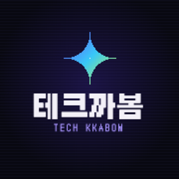

테크까봄 TechKkabom개인정보처리방침 · Privacy Policy
시행일 Effective: 2026-11-17
1. 어떤 앱인가요 · About the app
TechKkabom Uploader(이하 "앱")는 테크까봄 채널 운영자가 본인 영상을 본인 계정에 게시하기 위해 쓰는 내부 도구입니다. 일반 사용자에게 제공하지 않습니다.
The app is an internal tool used only by the TechKkabom channel owner to publish their own videos to their own accounts. It is not offered to the public.
2. 다루는 정보 · Data we access
- 운영자 본인 계정의 기본 정보(채널·계정 이름, ID) — 올바른 계정에 게시하는지 확인하는 데만 씁니다.
Basic info of the owner's own accounts (channel/account name and ID), used only to confirm the right account. - 게시할 영상 파일과 제목·설명·캡션 — 운영자가 만든 것입니다.
The video files and titles, descriptions and captions created by the owner. - 각 플랫폼이 발급한 접근 토큰 — 운영자 컴퓨터에만 저장하고 다른 곳으로 보내지 않습니다.
Access tokens issued by each platform, stored only on the owner's computer and never shared.
다른 사람의 개인정보는 수집·저장·판매·공유하지 않습니다. We do not collect, store, sell or share any other person's data.
3. 사용하는 서비스 · Third-party services
이 앱은 YouTube API 서비스를 사용합니다. 앱을 사용하면 YouTube 서비스 약관과 Google 개인정보처리방침에 동의하게 됩니다. Google 사용자 데이터 사용은 Google API 서비스 사용자 데이터 정책(제한적 사용 요건 포함)을 따릅니다.
This app uses YouTube API Services. By using it you agree to the YouTube Terms of Service and the Google Privacy Policy. Use of Google user data follows the Google API Services User Data Policy, including the Limited Use requirements.
Instagram(Meta)·TikTok API도 같은 목적으로만 사용하며 각 플랫폼 정책을 따릅니다. Instagram (Meta) and TikTok APIs are used only for the same purpose, under each platform's policies.
4. 접근 철회와 삭제 · Revoking access and deletion
연결은 언제든 끊을 수 있습니다. Access can be revoked at any time: Google 보안 설정 / Google security settings, Instagram·TikTok 앱 설정의 연결된 앱. 연결을 끊으면 운영자 컴퓨터의 토큰도 지웁니다. Tokens are deleted from the owner's computer when access is revoked.
5. 문의 · Contact
문의는 Instagram @techkkabom 메시지로 보내 주세요. Please contact us via Instagram direct message.